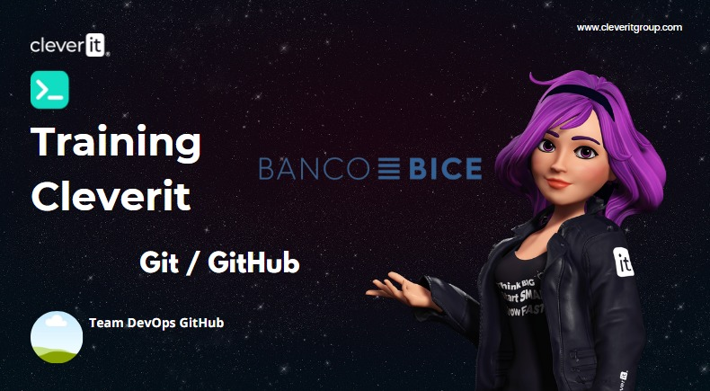

💡 Git & GitHub 🚀
Design By
Team DevOps GitHub
&
CleverIT
# TEMARIO DEL CURSO - ¿Qué es un Sistema de Control de Versiones? ¿Qué es Git? - Instalación y configuración de Git - Los tres estados de Git - ¿Qué es GitHub? - Comandos Basicos: - `git clone` --- ## ¿Que es un sistema Control de Versiones? Registra los cambios realizados en un archivo o conjunto de archivos a lo largo del tiempo. --- ## ¿Que es Git? Registra los cambios realizados en un archivo o conjunto de archivos a lo largo del tiempo. --- ## Centralizado  --- ## Distribuido  --- ## Uso de Git - historial - Almacenar el codigo - Trabajar en equipos - Encontrar Errores Insertados en el codigo --- ## Instalación https://git-scm.com/ --- ## Configuracion ``` git config --global user.name "UsuarioTEX_bice" git config --global user.email usuarioTEX@Bice.cl ``` --- ## Los 3 estados de Git  --- Inicializando un repositorio ```js [1|2] git Init (initialize a new git repository); git Clone (create a copy of an existing repository); ``` --- Del Working Directory al Staging Area ```js [1|2|3] git add <filename> git add <filename1> <filenameN> git add . ``` --- ## Comandos Basicos Viendo el estado de los archivos ``` Git status ``` --- ## Comandos Basicos Del Staging Area al Repository ``` git commit –m “Commit Message” ``` Convencion estandar para los mensajes de confirmación: - Deben ir entre comillas - Deben escribirse en presente - Deben ser breves (50 caracteres o menos) cuando se utiliza -m --- ## Comandos basicos Revisandolas diferencias entre eldirectory y el staging área (cambios desde el working último commit) Del Staging Area al Repository ``` git diff <filename> ``` --- ## Comandos basicos Revisando la historia de nuestro proyecto ``` git log ``` --- ## Comandos basicos Eliminado archivos ``` git rm <filename> ``` --- ## Comandos basicos Restaurando archivos ``` git restore <filename> ``` --- ## Comandos basicos Renombrando archivos ``` git mv <filename>> ``` --- ## Comandos basicos ¿En qué branch/rama estoy? ``` git branch ``` --- ## Comandos basicos Creando una nueva rama ``` git checkout –b “new_branch” ``` *branch names cant contain whitespaces new_branch* --- ## Comandos basicos Revisando las diferencias de un archivo entre dos branch diferentes ``` git diff branch1 branch2 <filename> ``` --- ## Comandos basicos Revisando las diferencias de un archivo entre dos commits ``` git diff commit1 commit2 <filename> ``` --- ## Comandos basicos #### Retroceso Descartando cambios del working directory ``` git checkout -- <filename> git checkout -- <filename> <filenameN> git checkout -- . ``` --- ## Comandos basicos #### Retroceso Deshaciendo commits ``` git reset --hard <hash> (Deshaciendo el commit perdiendo las modificaciones) git reset <hash> (Deshaciendo el commit manteniendo las modificaciones) git log (pra obtener el hash del commit) ``` --- ## Comandos basicos Moviendo a otra rama ``` git checkout “branch_name” ``` --- ## Comandos basicos guardado rápido provisional ``` git stash git stash List git stash pop ``` --- ## .gitignore Ignorando archivos no deseados
## ¿Qué es GitHub?  - Plataforma de desarrollo colaborativo - Aloja proyectos utilizando el sistema de control de versiones Git - Público y Privado (de pago) - El 4 de junio de 2018, Microsoft compró GitHub por la cantidad de 7.500 millones de dólares. --- ## ¿Qué es GitHub?  --- ## Github - Basicos Agregando el repositorio local a remote ``` git remote add origin <url> ``` --- ## Github - Basicos Enviando cambios al repositorio remoto ``` git push git push -u origin <branch> (Añadir un branch local a remote) ``` --- ## Github - Basicos Trayendo cambios desde el repositorio remoto ``` git pull ``` --- ## Github - Basicos Eliminando un Branch de forma local y remote ``` git push origin –delete <branch_name> (remote) git branch -d <branch_name> (local) ``` --- ## Github - Basicos Combinando archivos de diferentes ramas ``` git merge ``` ---  --- ---  --- ## Recursos Adicionales - [Learning](https://learngitbranching.js.org/) - [Roles de GitHub](https://docs.github.com/en/organizations/managing-peoples-access-to-your-organization-with-roles/roles-in-an-organization) - [GitHub Pages](https://docs.github.com/en/pages) - [Reglas de Protección de Ramas](https://docs.github.com/en/repositories/configuring-branches-and-merges-in-your-repository/defining-the-mergeability-of-pull-requests/about-protected-branches) - [Documentación de GitHub Actions](https://docs.github.com/en/actions) ---  !Gracias! --- # Training BICE - [Cultura DevOps](culturaDevOps.html) - [GitHub Knowledge](./githubKnow.html) - [Git & Github](git-github.html) - [Hand-ON](#elemento-4)